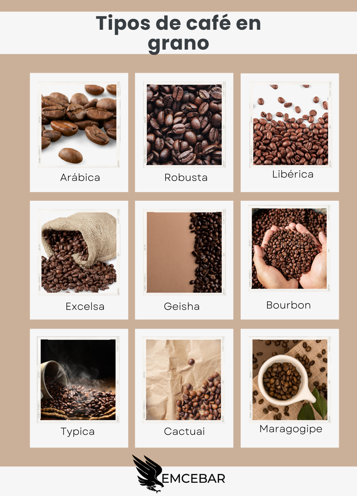
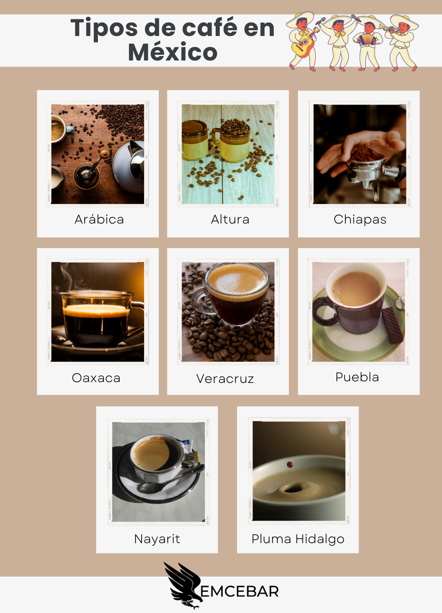
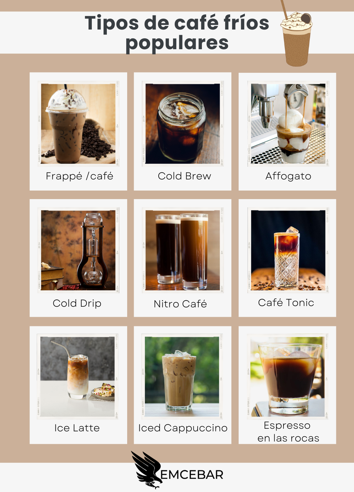
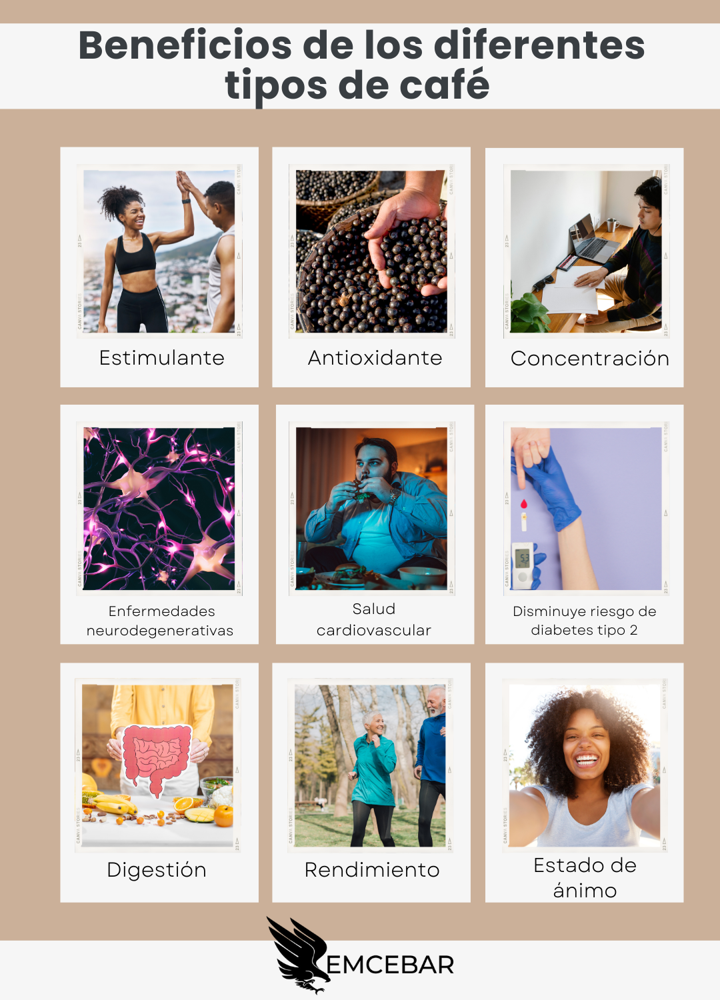
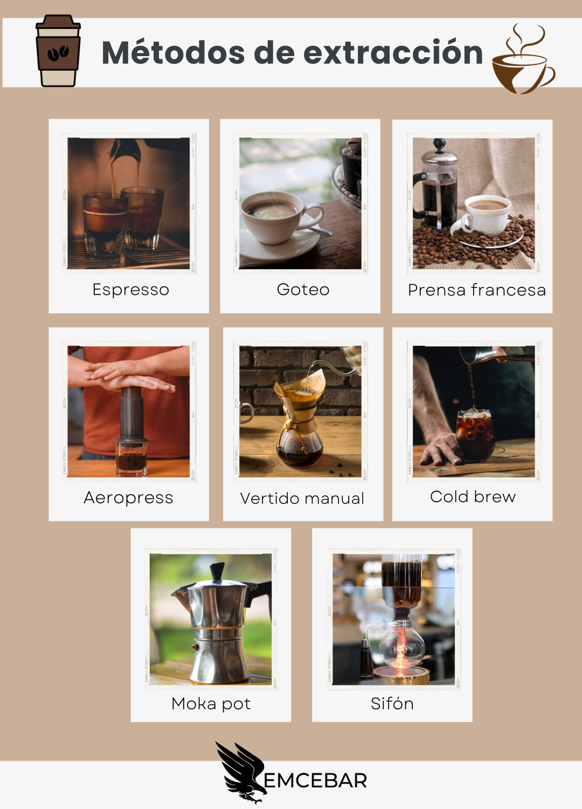

Café Arábica
Suave y aromático, cultivado en las mejores montañas.

Café Nayarit
El café nayarita puede tener un sabor suave con notas de frutas y cacao

Café Americano
El café del desayuno por excelencia, el americano, es una mezcla de agua con café molido.

Café frappé
Es una bebida hecha con café instantáneo y hielo molido con textura de nieve y crema batida.

Beneficios
beneficios a la salud, entre los que destacan el aumento de energía y de concentración, promueve la buena digestión

Café Espresso
Esta bebida se obtiene a través del filtrado a presión del café, tiene un sabor fuerte pero una consistencia suave.